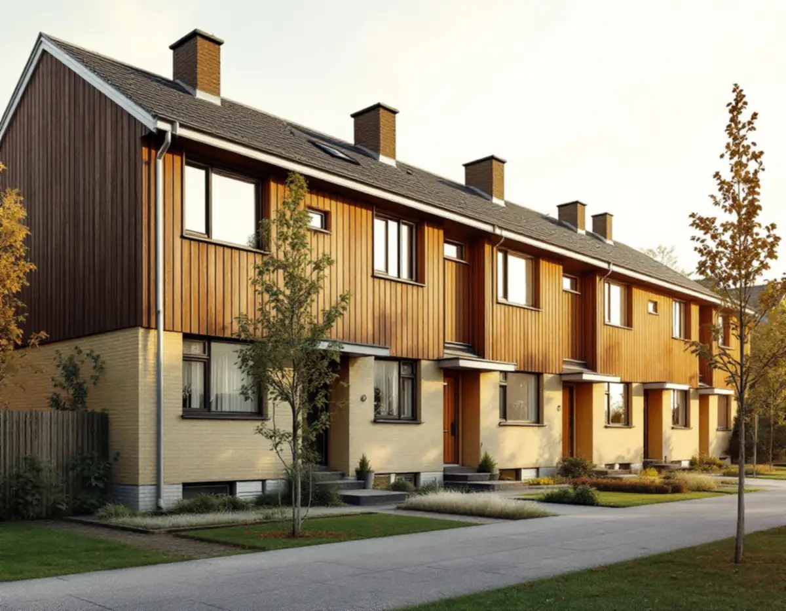
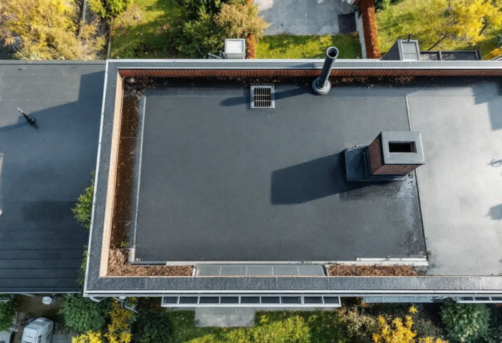
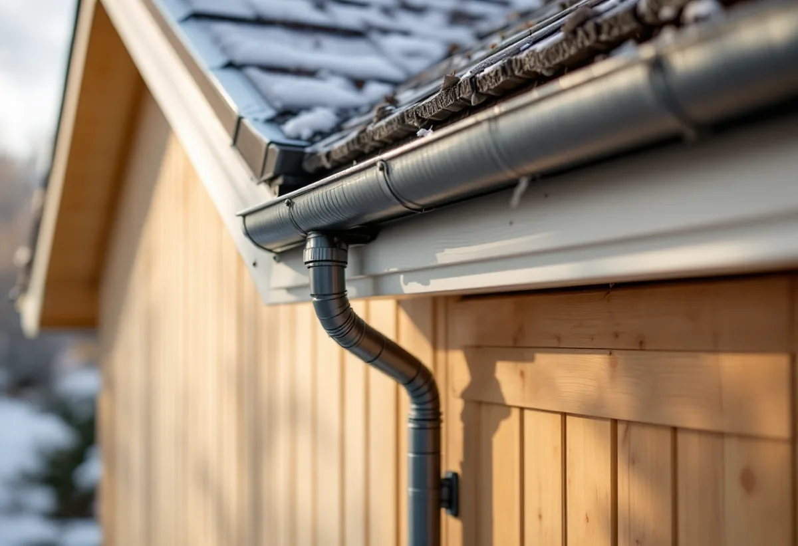

Ägarform
Vi reder ut om du eller föreningen beställer taket.
Småhusen i Kista och Akalla har ofta tak som inte syns från gatan: platta tak eller svagt lutande pulpettak. Ett sådant tak byts inte med pannor utan med en tätskiktslösning, och det ställer andra krav än ett vanligt sadeltak. Geal Entreprenad AB byter tak på radhus, kedjehus och villor i Kista och tar reda på hur taket är uppbyggt innan något rivs.

Staden köpte marken på Järvafältet 1966, och enligt Stadsmuseets skrift i serien Stockholms spår byggdes Kista ut åren 1975–1980. Staden tillämpade här betydligt friare former för den arkitektoniska utformningen än i de övriga stadsdelarna på Järvafältet. Bebyggelsen bestod av 2 500 lägenheter i flerbostadshus och omkring 780 småhus.
I stadens strategi för småhusområden, Varsam, räknas Akalla och Husby till de storskaliga stadsdelarna. Där beskrivs småhusen som huvudsakligen radhus och kedjehus, men också villor och atriumhus, med Akalla som ett av exemplen.

Varsam skriver att taken på de storskaliga stadsdelarnas småhus ofta var platta eller utformade som svagt lutande pulpettak, även om det också förekommer sadeltak med brant takfall. På ett tak med låg lutning rinner vattnet långsamt, och det är tätskiktet, anslutningarna och avvattningen som avgör hur länge taket håller.
När ett sådant tak byts går vi igenom brunnar, rännor, anslutningar mot uppstickande ventilation och skarvarna mot grannhusen i längan. Varsam påpekar också att färgsättningen var enhetlig inom husgrupperna och att de gruppbyggda husen står på små tomter, så ett tak som syns från gångvägen ska passa in i gruppen.
Stadens områdesfakta för 2025 visar att småhusen i Kista ägs på olika sätt. I stadsdelen Kista finns 482 småhus med äganderätt och 404 i bostadsrätt. I Akalla är fördelningen den omvända: 170 småhus med äganderätt och 493 i bostadsrätt. I Husby finns enligt samma statistik inga småhus alls.
Bor du i ett radhus i bostadsrätt avgör stadgarna vem som svarar för taket. Bostadsrättslagen utgår från att du håller lägenheten i gott skick om inte stadgarna säger annat, och ingrepp i bärande konstruktion kräver styrelsens tillstånd. Därför börjar vi med att reda ut vem som beställer.
Stockholms stad påpekar att en fasadändring som inte kräver bygglov ändå ska stämma med detaljplanen, och att detaljplanen kan innehålla bestämmelser som skyddar ett område eller kräver lov för åtgärder som annars är lovfria. Detaljplanen för fastigheten finns i stadens e-tjänst Bygg- och plantjänsten.
I samma e-tjänst kan du själv leta fram äldre handlingar som stadsbyggnadskontoret har för fastigheten. För ett platt tak från 1970-talet är ritningarna värdefulla, eftersom de visar hur takets lutning, isolering och avvattning var tänkta från början. Vi använder dem som underlag när vi beskriver det nya taket.
Boverket räknar ett byte till annat taktäckningsmaterial som en fasadändring, medan samma material och utförande räknas som underhåll. Ska ett papptäckt pulpettak få en annan beläggning, eller ett platt tak bli ett lutande, är det alltså mer än underhåll och vi kontrollerar plan och lov först.
Om takläggning i stadsdelen i stort kan du läsa under takläggare i Kista, och om tjänsten under takbyte.

Vi reder ut om du eller föreningen beställer taket.
Äldre handlingar och detaljplan hämtas ur Bygg- och plantjänsten.
Tätskikt, brunnar, rännor och anslutningar mot grannarna går vi igenom.
Uppdelat per hus eller etapp när flera tak byts.
Gammalt tätskikt rivs, underlaget ses över och det nya taket läggs.
Avvattning och anslutningar kontrolleras tillsammans med dig.
Skatteverket räknar byte och reparation av takpannor och hängrännor på ett småhus som rotarbete, när du äger och bor i huset eller har det som fritidshus. I en bostadsrätt ger arbete på gemensamma ytor som tak och fasader inget rotavdrag.
Avdraget är högst 30 procent av arbetskostnaden, högst 50 000 kronor per person och år och högst 75 000 kronor tillsammans med rutavdrag. Material och resor ger inget avdrag. Geal drar avdraget direkt på fakturan.
Takets yta, typ av tätskikt, antal brunnar och genomföringar, underlagets skick och om flera hus i längan byts samtidigt. En överblick finns i vad kostar ett takbyte. Efter ett gratis platsbesök får du ett skriftligt kostnadsförslag.
Byte av tegel-, betong- och plåttak.
Takbyte →Takbyte, takbesiktning och plåtarbeten.
Takläggare i Kista →Låga tak, tätskikt och takbrunnar från 1970-talet.
Takrenovering i Kista →Radhusen, föreningen och ventilationen.
Badrumsrenovering i Kista →Uterum, altan och föreningens tillstånd.
Byggföretag i Kista →Radhus, atriumhus och husgruppen.
Fasadmålning i Kista →Panel, skivor och isolering på radhus.
Fasadrenovering i Kista →Radhus och villor från 1970-talet.
Fönsterbyte i Kista →1970-talets radhusfönster.
Fönsterrenovering i Kista →Nya golv på betong i radhus och lägenheter.
Golvläggare i Kista →Golvslipning i bostadsrätt, hyresrätt och radhus.
Golvslipning i Kista →Småhus i förening och kök från 1970-talet.
Köksrenovering i Kista →1970-talets hus, asbest och ROT.
Målare i Kista →Rännor, stuprör och beslag.
Plåtslagare i Kista →Garderober, väggar och dörrar i lägenheten.
Snickare i Kista →Lägenheter och radhus från 1970-talet.
Tapetsering i Kista →